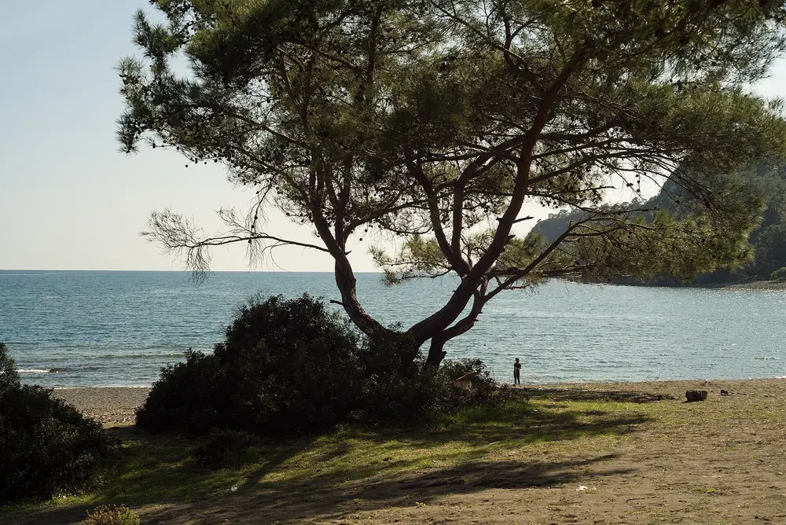
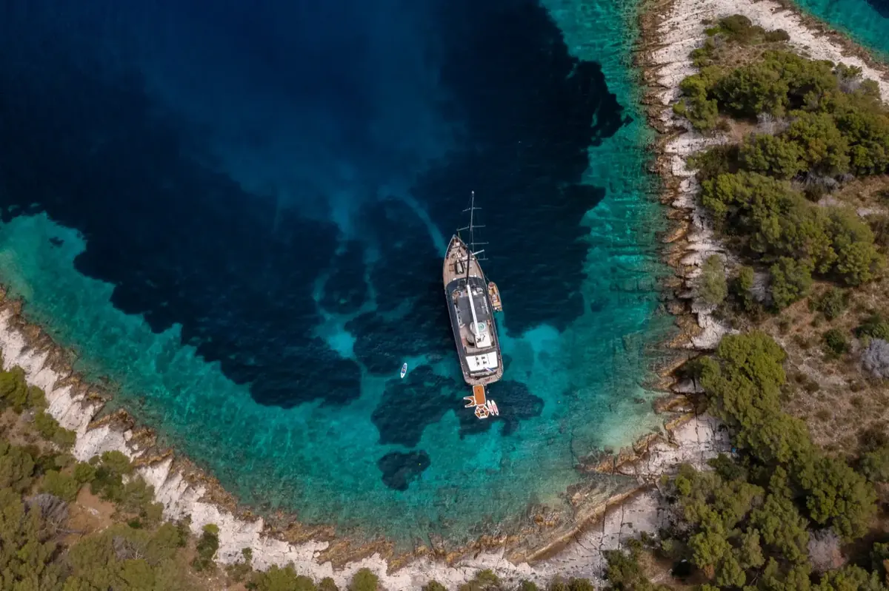
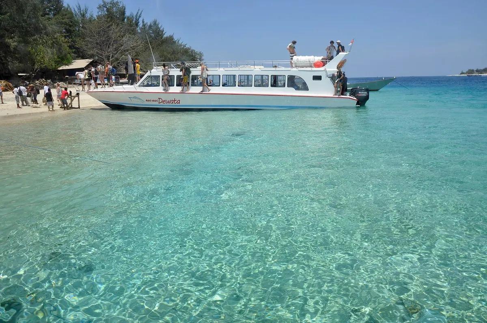
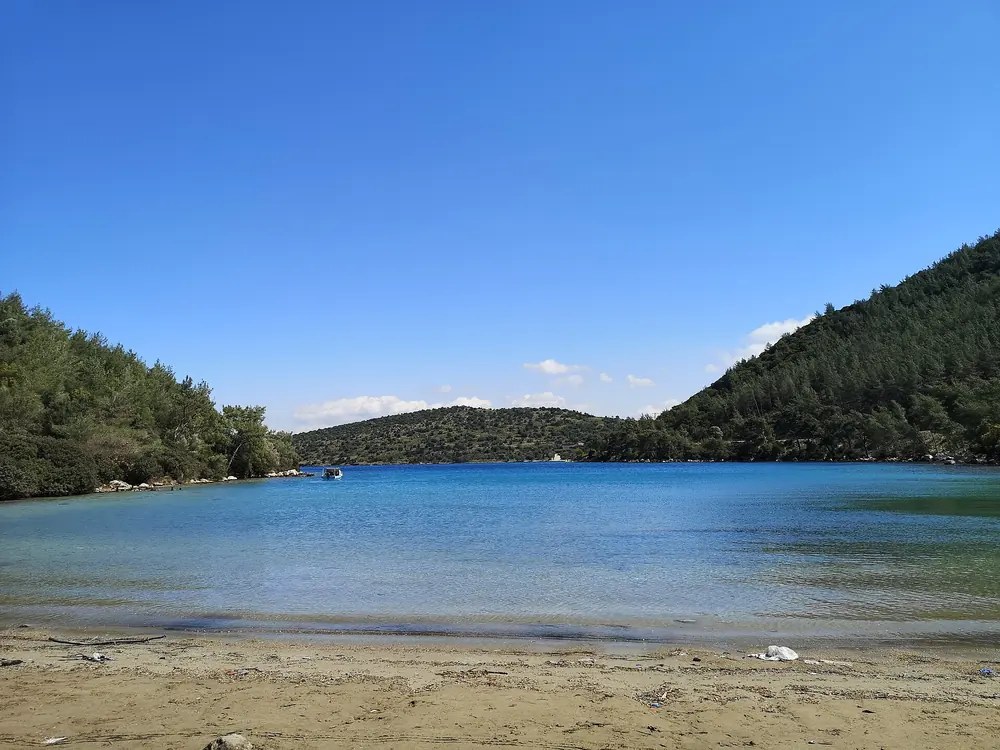
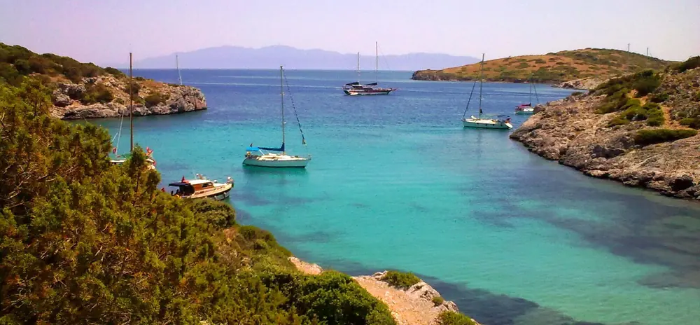
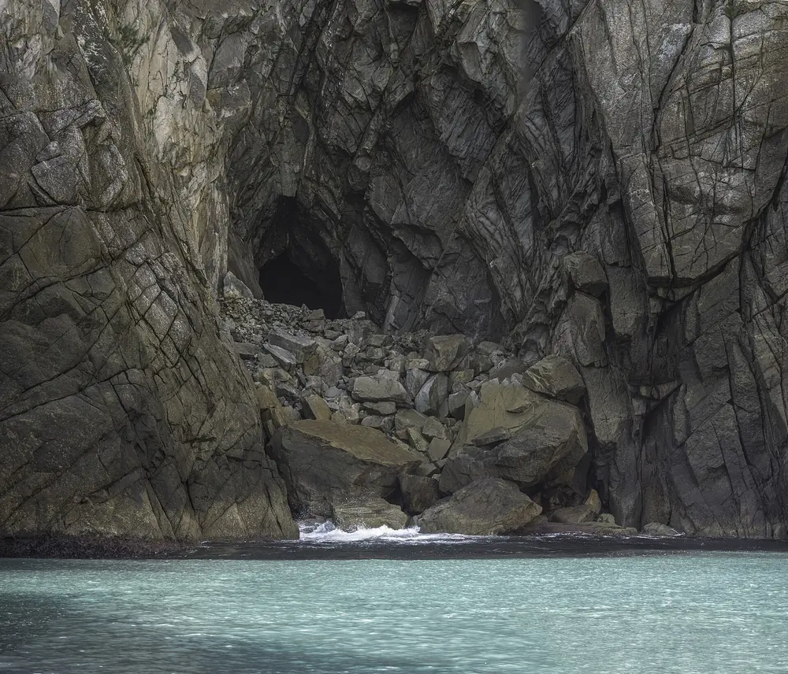
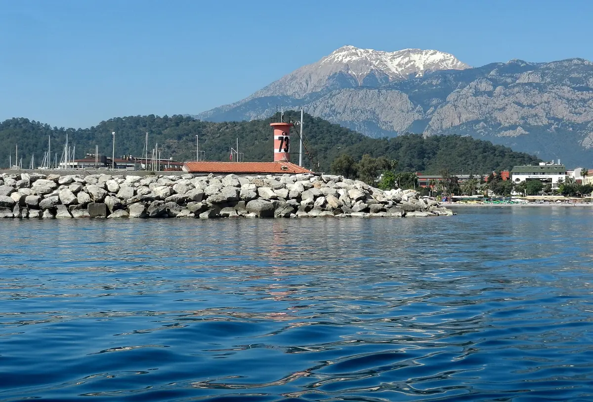

60 dk molaPhaselis Koyu
Antik Phaselis kentinin hemen yanında, çam ormanıyla çevrili üç küçük koydan oluşan tarihi bir yüzme durağı.
Phaselis, Cennet Koyu, Akvaryum Koyu ve Korsan Mağarası rotasında; ızgara çupra balık, meze çeşitleri ve sınırsız soft içecek dahil günübirlik lüks tekne turu.


12 lüks yat
Kemer Marina merkezli Kemer Yat Turu; 12 lüks yat, 12 profesyonel kaptan ve çok dilli mürettebatıyla Kemer günlük tekne turu düzenleyen yerel bir denizcilik ailesidir. Her teknemiz sigortalı, tam donanımlı ve her seferin ardından bakımı yapılır. Misafirlerimizin %64'ü bizi tavsiye ederek geri döner.
Amacımız sadece bir tekne turu satmak değil; Kemer koylarının saklı güzelliklerini, ızgara balık kokusunu ve denizin huzurunu bir arada sunan eşsiz bir gün yaşatmaktır.
12 bakımlı yat ve geleneksel gulet; geniş güverteler, gölgelik ve can yeleği ile.
Türkçe, İngilizce ve Rusça konuşan, ilk yardım sertifikalı kaptan ve personel.
Phaselis, Cennet Koyu, Akvaryum Koyu ve Korsan Mağarası'nı kapsayan rota.
Kemer günlük tekne turumuzda her biri farklı bir hikâye anlatan dört eşsiz koyda yüzme, snorkel ve fotoğraf molası veriyoruz.

60 dk molaAntik Phaselis kentinin hemen yanında, çam ormanıyla çevrili üç küçük koydan oluşan tarihi bir yüzme durağı.

90 dk molaAdını hak eden turkuaz suyu ve kumlu plajıyla öğle yemeği molamızı verdiğimiz en sevilen koy.

45 dk molaSu altı görüş mesafesi yüksek, balık sürüleriyle dolu; snorkel ve maske-şnorkel molamızın merkezi.

30 dk molaKayalıkların içine gizlenmiş doğal deniz mağarası; tekneyle içine girip serin suyunda yüzme şansı.
Rota, deniz ve hava koşullarına göre kaptanımız tarafından güvenli şekilde güncellenebilir.
Gizli ücret yok. Fiyat 6 kişilik grup için toplam 650 $ (kişi başı 108 $) olarak uygulanır; 6 kişiden kalabalık gruplarda kişi başı +40 $ eklenir. Rezervasyonunuzu WhatsApp'tan 1 dakikada tamamlayın.
09:30
Kemer Marina'dan hareket
10:45
Phaselis Koyu yüzme molası
12:30
Cennet Koyu'nda öğle yemeği
13:45
Akvaryum Koyu snorkel molası
15:30
Kemer Korsan Mağarası & marina dönüşü
Öğle yemeği ve sınırsız soft içecek dahil, her şey hazır paket.
6 kişilik grup için toplam 650 $ · kişi başı 108 $. 6 kişiden kalabalık gruplarda kişi başı +40 $ eklenir.
Yemekli pakette tüm soft içecekler sınırsızdır; ekstra içecek ücreti alınmaz.
Günlük yat turumuz sabah 09:30'da Kemer Marina'dan hareket eder ve 15:30'da aynı noktaya dönüş yapar. Kemer, Beldibi, Göynük ve Tekirova'daki otellerden ücretsiz servis sunulur.
Tur fiyatına öğle yemeği (ızgara çupra balık, makarna, salata ve meze çeşitleri) ile sınırsız soft içecek (kola, fanta, meyve suyu, çay) dahildir. Fiyat, 6 kişilik grup için toplam 650 $ (kişi başı 108 $) olarak uygulanır.
Turumuz Phaselis Koyu, Cennet Koyu, Akvaryum Koyu ve Kemer Korsan Mağarası rotasını takip eder. Her koyda 30-90 dakika arasında yüzme ve fotoğraf molası verilir.
0-6 yaş ücretsizdir, 7-12 yaş için indirimli çocuk tarifesi uygulanır. Tüm teknelerimizde her beden can yeleği bulunur; mürettebatımız ilk yardım sertifikalıdır.
Rezervasyon için kapora alınmaz. Ödemeyi tur günü Kemer Marina ofisimizde nakit veya kredi kartı ile yapabilirsiniz. Ekibimiz WhatsApp üzerinden 1-2 saat içinde dönüş yapar.
Deniz durumu güvenli değilse tur ücretsiz olarak başka bir güne kaydırılır veya ödemeniz tam iade edilir. Karar, kaptanımız tarafından sabah 08:30'da verilir ve size WhatsApp'tan bildirilir.
Fiyatımız 6 kişilik gruplar için kişi başı 108 $ (toplam 650 $) olarak uygulanır. 6 kişiden kalabalık gruplarda kişi başı +40 $ eklenir. 0-6 yaş ücretsizdir, 7-12 yaş indirimli çocuk tarifesinden yararlanır. Kesin fiyat için WhatsApp'tan grup kişi sayınızı iletmeniz yeterlidir.
Başka bir sorunuz mu var?
WhatsApp'tan yazın, dakikalar içinde fiyat ve müsaitlik bilgisi gönderelim.
Kemer Marina, Antalya'nın en merkezi limanıdır; Kemer merkezden 5 dakika, Antalya havalimanından yaklaşık 55 dakika mesafededir. Otelinizden ücretsiz servisimizle de gelebilirsiniz.

Marina otoparkı ücretsizdir ve tur süresince araçlarınız güvende kalır.